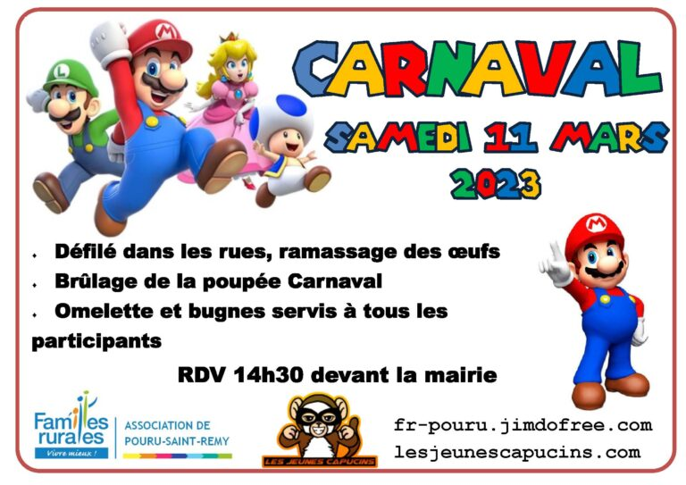

Data & admin BDD chez AgiLab. Mon job : protéger la donnée, automatiser ce qui doit l'être, et dire non aux usines à gaz. Le soir : central au volley, régie de stream maison, fosse en concert de rap.
01 - Projets
Pas de vitrine marketing : ce que j'ai construit, avec quoi, et pourquoi. Clique sur une carte pour voir les captures.
→ tous mes dépôts publics : github.com/MathysLan
02 - Parcours
2023 - Lycée Pierre Bayle
Spécialités NSI, SI et Mathématiques, option Latin. Les premières lignes de code sérieuses.
2023 - 2026 - IUT de Reims
Développement, bases de données, gestion de projet agile et travail en équipe.
avril 2025 - AgiLab
Découverte du support en entreprise : correction de bugs clients et documentation des correctifs.
sept. 2025 - juin 2026 - AgiLab
Conception et industrialisation d'un système d'automatisation des tests qualité, en parallèle de la 3e année.
2026 - aujourd'hui - AgiLab
Automatisation, outillage qualité et administration des bases. La donnée client, on la protège.
03 - Engagement associatif
rôle actuel
Avec le président, je gère la logistique et le choix des événements. Le principe est simple : on organise, on récolte des fonds, on les réinvestit dans le collectif. Résultat concret : toute l'association à Europa-Park, payé par nos propres événements. J'y suis depuis le début et j'y reste - on ne lâche pas une équipe qui vous a fait confiance.
0+
années d'engagement
0
visiteurs au marché artisanal
0+
événements récurrents
Suivez-nous : lesjeunescapucins.com · Facebook

Carnaval
défilé, brûlage de la poupée & Mario
Marché artisanal
complet - 300 visiteurs
Halloween
animations pour petits & grands
Marché de Noël
stands & ambiance festive
Bourse aux jouets
événement solidaire
Sorties bénévoles
Walygator · Astérix · Europa-Park
04 - En dehors du code
volley-ball
SUAPS de Reims → club à la rentrée
6 h par semaine sur le terrain. Le poste de central, c'est de la lecture de jeu, du timing au contre et beaucoup de communication - exactement ce que je ramène dans le travail d'équipe au quotidien.
karaté - 10 ans de pratique
full contact
Dix ans de tatami avant le filet. Le full contact m'a appris la discipline, la gestion de la pression et le goût du travail long - jusqu'à une finale nationale.
stream & audiovisuel
LIVEJe stream sur Twitch et je conçois toute ma régie moi-même : scènes OBS, routage audio VoiceMeeter, et overlays sur mesure en HTML / Tailwind intégrés directement dans OBS.
- concerts & festivals
Mon premier concert en arène
rap FR · fosse
Les gros shows d'arène
+ Cabaret Vert en festival
Prochain sur la liste
à venir ✦
- séances cultes
Whiplash
Damien Chazelle · 2014
Tenet
Christopher Nolan · 2020
Fight Club
David Fincher · 1999
05 - Jeux
Pas d'installation, pas de téléchargement, pas de compte. Tu ouvres la page dans ton navigateur, tu joues. C'est en cours de dev.